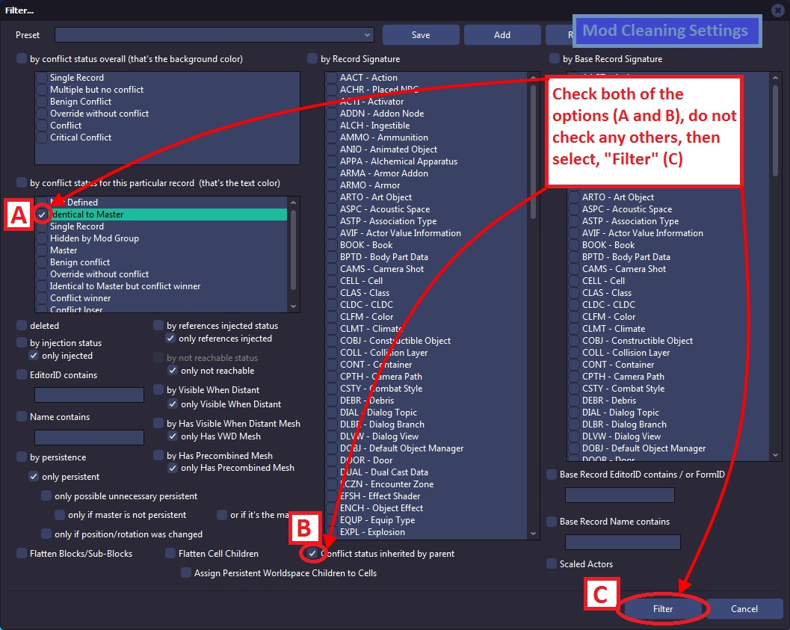

The following images include several of the more pertinent reference charts and cheat sheets to make them easier and more accessible to you in the future.
Conflict Detection Filter Settings

Reachable Info Filter Settings
Identical To Master Detection
The Identical To Master Detection filter settings are Part 1 of Cleaning Process (outdated)

Mod Cleaning filter
The Mod Cleaning filter settings are shown are Part 2 of Cleaning Process (outdated)

Conflict Detection Load Order Workflow diagram (one of two)
Conflict Detection Load Order Workflow diagram (two of two)